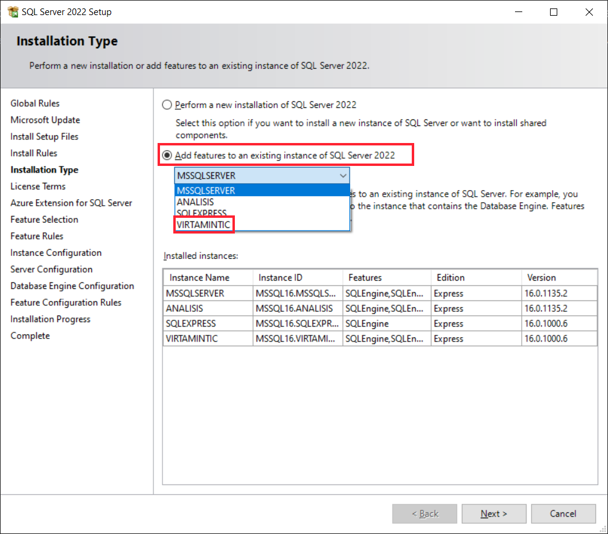
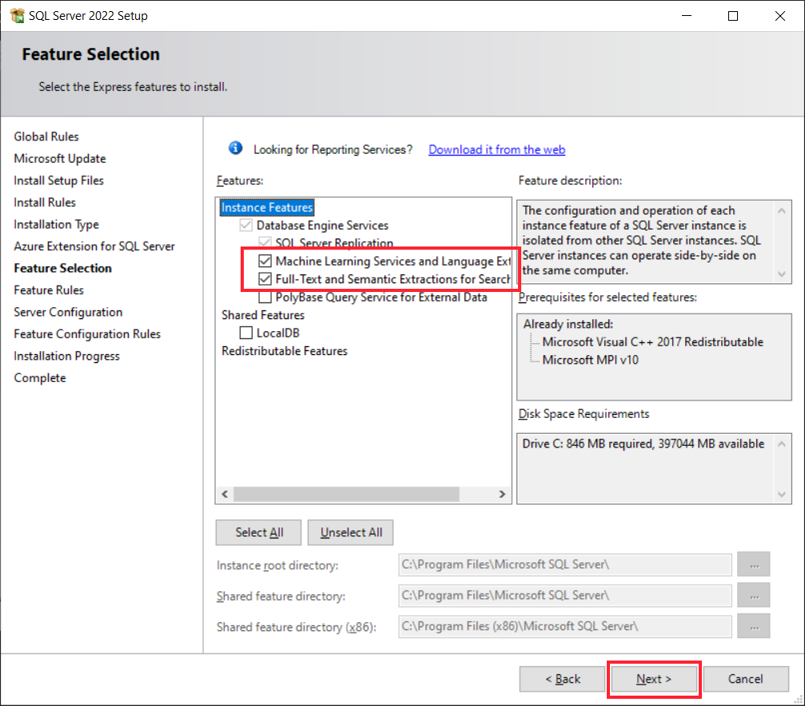
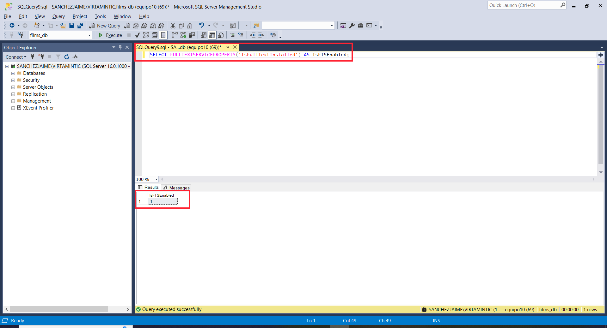
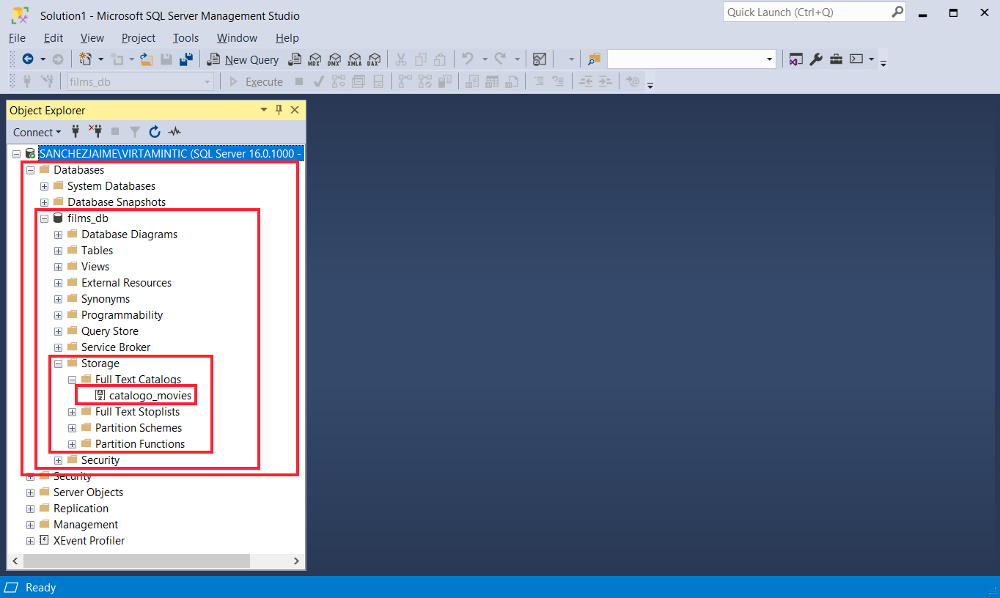

Crear un catálogo Full-Text Search (FTS) en SQL Server#
Antes de crear un catálogo para Full-Text Search (FTS) en SQL Server, es necesario asegurarse de que esta característica esté instalada y habilitada. Este tutorial cubre primero cómo instalar las características necesarias y luego cómo crear el catálogo.
Paso 1: Instalar las características Full-Text Search (FTS) y Machine Learning (opcional)#
Abrir el instalador de SQL Server:
Ve al directorio (ExpressAdv_ENU) donde tienes el instalador de SQL Server y ejecuta el archivo
setup.exe.
Seleccionar “Agregar características a una instancia existente”:
En la ventana principal del instalador, selecciona “Agregar características a una instancia existente” y elige tu instancia activa de SQL Server (VIRTAMINTIC).

Seleccionar las características:
En la pantalla de selección de características, asegúrate de marcar:
Full-Text and Semantic Extractions for Search (FTS).
Opcionalmente, si deseas usar scripts de Machine Learning en un futuro, selecciona Machine Learning Services and Language Extensions.

Completar la instalación:
Sigue los pasos del asistente para completar la instalación.
Reinicia el servicio de SQL Server si es requerido.
Verificar que FTS está habilitado:
Abre SQL Server Management Studio (SSMS) y ejecuta el siguiente comando:
SELECT FULLTEXTSERVICEPROPERTY('IsFullTextInstalled') AS IsFTSEnabled;
Si el resultado es
1, FTS está habilitado.

Paso 2: Crear un catálogo FTS en SQL Server desde Python#
Un catálogo Full-Text es un contenedor lógico que organiza índices de texto completo. El siguiente código ejecuta el comando SQL para crear el catálogo:
create_catalog_query = "CREATE FULLTEXT CATALOG catalogo_movies AS DEFAULT"
try:
cursor.execute(create_catalog_query)
print("Catálogo creado con éxito")
except Exception as e:
print(f"Error en el Query: {e}")
Resultado esperado:
Si todo está correctamente configurado, deberías ver en consola:
Catálogo creado con éxito
Si hay un error, el mensaje correspondiente se imprimirá con detalles.
Recomendaciones:
Antes de ejecutar este código, verifica que:
El servidor tiene habilitada la característica de Full-Text Search (FTS).
El usuario que estás usando tiene permisos para crear catálogos en la base de datos especificada.
Paso 3: Verificar el Catálogo en SSMS#
Abrir SSMS y conectar al servidor:
Abre SQL Server Management Studio (SSMS) y conéctate a tu instancia de SQL Server.
Expandir la base de datos:
En el panel izquierdo, busca tu base de datos bajo la sección Databases.
Navegar a los catálogos de texto completo:
Expande la base de datos.
Busca y expande la carpeta Storage.
Dentro de Storage, selecciona Full Text Catalogs.
Buscar el catálogo creado:
Deberías ver el nombre del catálogo (
catalogo_moviesen tu ejemplo) listado en esta sección.Si el catálogo aparece aquí, significa que fue creado correctamente.

Conclusión:
Con este proceso, ya tienes un catálogo Full-Text creado en SQL Server. En la sección posterior, cubriremos cómo asociar índices a este catálogo y realizar consultas utilizando Python.